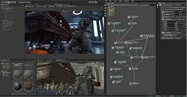
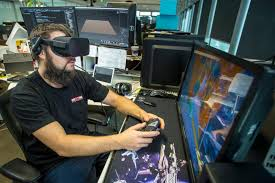
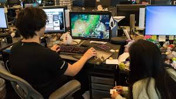
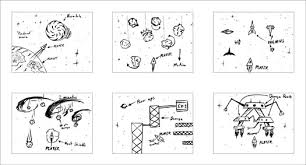
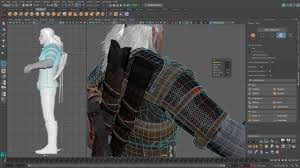
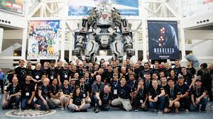

Game design. One of my favorite hobbies,and posibly future careers. Is somthing that I realy enjoy working on. Perhaps you would be interesting in game design too! Game design is the art of applying design and aesthetics to create a game for entertainment or for educational, exercise, or experimental purposes. Increasingly, elements and principles of game design are also applied to other interactions, particularly virtual ones.
Game design creates goals, rules and challenges to define a game type. These types can include a board game, card game, dice game, casino game, role-playing game, sport, video game, war game or simulation. These results produce desirable interactions among its participants and, possibly even spectators. Video games have play styles from being casual single to multiplayer, to even live competitive tournements!
 Games can be characterized by "what the player does"and what the player experiences. Major key elements identified in this context are tools and rules that define the overall context of game.Many game tools are tokens, meant to represent other things. A token may be a helth potion, ingame curency, or an intangible item such as a point scored. Whereas games are often characterized by their tools, they are often defined by their rules. While rules are subject to variations and changes, enough change in the rules usually results in a "new" game. Rules generally determine turn order, the rights and responsibilities of the players, and the player's goals. changes in a game's state are determined by how game components interact with each other.
 A game designer is the person who invents a game's concept, it's central mechanisms, and it's rules.Often, the game designer also invents the game's title and,possibly it's theme. Sometimes these activities are done by the game publisher, not the designer, or may be dictated by a licensed property (such as when designing a game based on a film). During design, a game concept is fleshed out. Mechanisms are specified in terms of components and rules. The play sequence and possible player actions are defined, as well as how the game starts, ends, and what is its winning condition. In video games, storyboards and screen mockups may be created.
Although there are other posistions that are part of game development. Game design is my favorite in that it alows me to use my creative mind to it's fullest potential. With so many resources and oppertunities. All it takes is an intrest and determination to make game designing turn from a hobby into a career! Even if you don't want to make it a career, it's still fun to just make what your heart tells you. It is a great activity to get into, but it's up to you to make the first step.
 Questions